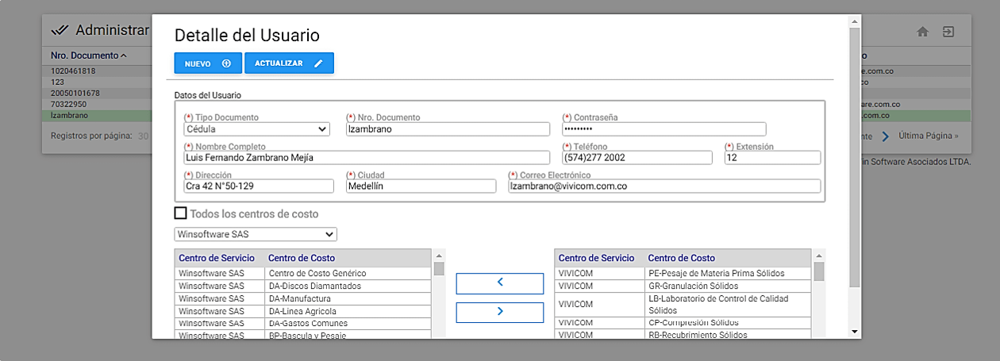
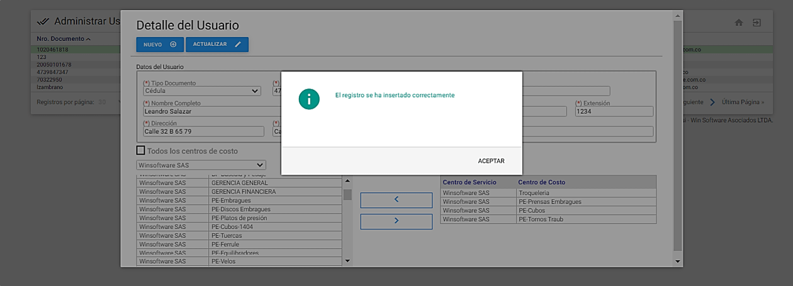
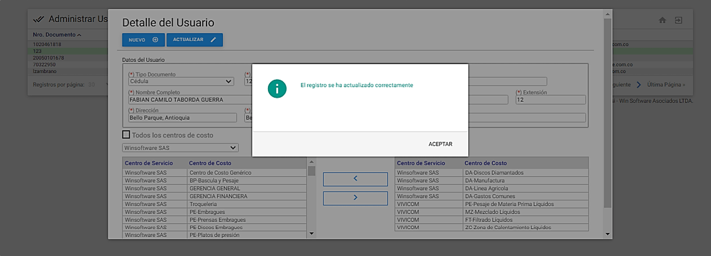
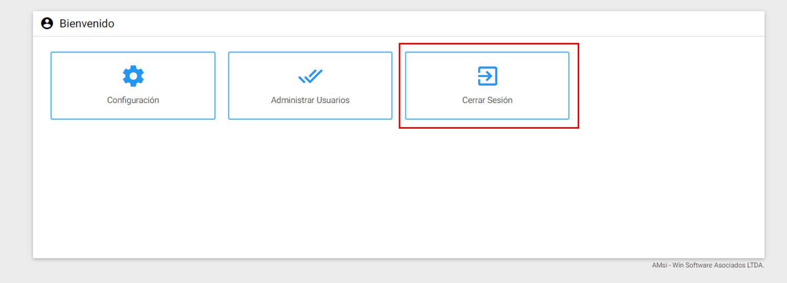

Se orienta al Administrador en la creación y actualización de datos del Usuario, además de la asociación de uno, varios o todos los centros de costo de una o varias compañías, para que los usuarios solicitantes puedan crear SS y/o OT desde AMsi. Se hace de igual forma una ilustración sobre los comandos que aparecen en pantalla.
En esta sección
- Creación de Usuarios
- Asociar/Desasociar Centros de Costo/Compañías
- Actualización de Usuarios
Una vez ingrese por medio del Usuario Administrador, dar clic en Administrar Usuarios en la ventana de Menú Principal para continuar con la Administración de los Usuarios de AMsi.
 Imagen 64. AMsi - Ir a Administrar Usuarios
Ventana Visor de Usuarios
 Imagen 65. AMsi - Visor Administrar Usuarios
Imagen 65. AMsi - Visor Administrar Usuarios
El Visor de Administrar Usuarios lista el total de los usuarios registrados en el AMsi .
Los títulos en azul que encabezan las columnas son también botones que permiten ordenar la tabla, según el título seleccionado de orden ascendente/descente.
Para elegir un registro de la tabla se da un clic sobre él.
En la parte superior izquierda de esta ventana se observa la identificación actual de la opción seleccionada desde el Menú Principal del Usuario Administrador. También, al lado derecho de esta sección, se encuentra el botón NUEVO con el fin de acceder rápidamente a la ventana Detalle para ingresar un nuevo registro o usuario.
En la parte superior derecha se encuentran dos opciones, para dirigirse al Menú Principal y para Cerrar Sesión en el aplicativo .
En la parte inferior izquierda de esta ventana se encuentra el número de registros por página, además de la cantidad de registros totales que conforman la tabla.
En la parte inferior derecha de esta ventana se observan también varios enlaces para navegar avanzando y retrocediendo páginas completas de registros. Como guía existe un indicador sobre la página relativa actual y la posibilidad de ingresar a la primera o última página, sin importar la página en la que se encuentre.
Ventana Detalle de Usuarios
 Imagen 66. AMsi - Visor Administrar Usuarios
Es la porción de la pantalla en que se muestran los datos detallados del usuario seleccionado en la ventana Visor.
Además de la información detallada de un usuario, contiene dos botones, el primero NUEVO y ACTUALIZAR que siempre están en la parte superior izquierda de la ventana.
El botón NUEVO prepara la ventana Detalle para el ingreso de un nuevo registro. Al activarlo, el sistema reemplaza la línea de 2 botones por una nueva de 2 botones: INSERTAR y CANCELAR .
El botón INSERTAR ingresa el nuevo registro a la base de datos actualizando la ventana Visor, mientras que el botón CANCELAR aborta el proceso de creación del nuevo registro retornando a la ventana Detalle.
El botón ACTUALIZAR sirve para guardar o salvar en la base de datos la información que se ha modificado en la ventana Detalle, correspondiente al registro señalado por el cursor en la ventana Visor y registrar allí simultáneamente el mismo cambio.
Para salir de la ventana Detalle se puede dar clic en la parte de afuera de esta ventana, la cual lleva a la ventana Visor.
Creación de Usuarios
 Imagen 67. AMsi - Detalle Usuario
A este formulario se llega haciendo clic sobre el botón NUEVO de la ventana detalle del usuario. A través de ella se diligencian los Datos del Usuario y se asocian los Centros de Costo para la creación del mismo en AMsi . A continuación, se describen los campos que componen esta ventana de Creación de Usuarios.
Datos del Usuario
Este recuadro hace referencia a los datos del Usuario solicitante necesarios para su creación y son los que aparecerán en el formulario Datos del Solicitante en Actualizar Perfil para Crear Nueva Solicitud o Crear Nueva Orden. Contiene la información personal del solicitante.
Todos los campos marcados con asterisco (*) son de carácter obligatorio.
Tipo Documento: En este campo se elige de la lista desplegada el tipo de documento con el cual el usuario se puede identificar. (Campo requerido).
Nro. Documento: En este campo se define el número de Identificación correspondiente al Tipo Documento, del usuario solicitante. (Campo requerido).
Contraseña: En este campo se define la contraseña, con el fin de que el usuario que se está registrando pueda acceder a AMsi. (Campo requerido). Cada vez que se actualice este registro es necesario confirmar la contraseña.
Nombre Completo: En este campo se digita el nombre completo del usuario solicitante. (Campo requerido).
Teléfono: En este campo se define el número telefónico donde se puede localizar al usuario solicitante. El número telefónico generalmente corresponde a una dependencia de la organización a la cual pertenece al usuario solicitante.
Extensión: En este campo se asigna un número de extensión telefónico donde se puede localizar al usuario solicitante.
Dirección: En este campo se asigna la dirección que corresponde a la organización a la cual pertenece al usuario solicitante.
Ciudad: En este campo se asigna la ciudad en la cual vive el usuario solicitante o está ubicada la institución para la cual labora.
Correo Electrónico: Dirección de correo electrónico del usuario solicitante asignado por la organización, o bien, correo personal del usuario solicitante en caso de no tener una cuenta de correo electrónico corporativa.
Todos los centros de costo Este cuadro de chequeo (checkbox) permite asociarle al usuario todos los centros de costo de todas las compañías existentes en AM, al chequearlo se ocultan los centros de costo, que están en la parte inferior de la ventana.
Compañía: Está estructurado por un campo desplegable para seleccionar la compañía. Según la elección se listan los centros de costo de esa compañía en el recuadro inferior izquierdo para asignar manualmente los Centros de Costo al usuario como se muestra a continuación:
 Imagen 68. AMsi - Elegir Compañía
En el campo anterior se selecciona la compañía deseada, y luego en el cuadro de la inferior e la izquierda se listan todos los Centros de Costo correspondientes a esa compañía. Mientras que, en el cuadro inferior de la derecha, se listan los Centros de Costo que se van asociando al usuario solicitante.
La funcionalidad consiste en seleccionar el Centro de Costo desde el recuadro de la izquierda, esta selección se hace a través de un clic sobre registro deseado, el sistema lo sombrea de color verde confirmando la selección. En el medio de los dos recuadros se encuentran dos botones los cuales hacen la asociación/desasociación o “traslado”. El botón superior de traslado indica devolver el traslado de derecha a izquierda, es decir que desasocia a ese Centro de Costo, pero el botón inferior de traslado indica trasladar de la izquierda a la derecha, es decir, que se asasocia ese Centro de Costo.
Para asociar varios Centros de Costo, se presiona la tecla “Shift” sostenido y con el cursor se eligen los Centros de Costo desde el cuadro izquierdo usando las fechas de traslado.
 Imagen 69. AMsi - Asociar/Desasociar Centros de Costo
Imagen 69. AMsi - Asociar/Desasociar Centros de Costo
Para visualizar la información completa de los Centros de Costo disponibles para ser asociados y los que se asociaron al usuario solicitante y facilitar su recorrido es posible realizar desplazamientos verticales del cursor tanto hacia el comienzo como hacia el final del cuadro.
Nota: Una vez que se inserta un usuario nuevo o se actualice un usuario existente, el sistema muestra un mensaje de notificación de registro exitoso.
Cuando se tiene la parametrización de Relacionar Usuarios por Compañía el proceso anterior es el mismo, sólo que en lugar de listar Todos los centros de costo cambia a Todas las compañias. El recuadro inferior en lugar de listar los Centros de Costo, lista las Compañías.Sin embargo, es el mismo proceso. Se muestra una imagen a continuación:
 Imagen 70. AMsi - Asociar/Desasociar Compañias
Imagen 70. AMsi - Asociar/Desasociar Compañias
Para mayor comprensión remitirse al siguiente video:
Para actualizar un usuario, se debe seleccionar el registro y hacer las modificaciones respectivas tanto de información como asociación/desasociación de Centros de Costo o Compañia,terminar el proceso y guardar los cambios con el botón ACTUALIZAR . Para mayor comprensión al respecto de este proceso, remítase al siguiente video: